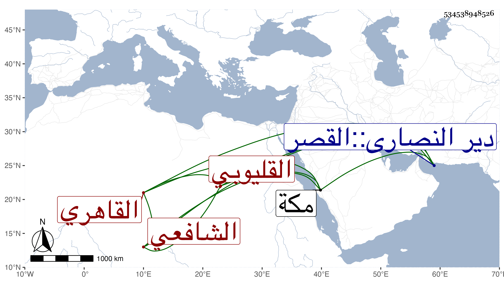

0902Sakhawi.DawLamic.ITO20230111-ara1.EIS1600.534538948526
Biography ID: 534538948526
135
محمد بن محمد بن أحمد الشمس القليوبي ثم القاهري الشافعي نزيل القصر بالقرب من الكاملية ووالد أبي الفتح محمد المكتب الآتي ويعرف بالحجازي . أخذ عن النور الآدمي والولي العراقي وابن المجدي وعنه أخذ الفرائض والحساب وغيرهما من فنونه وأذن له إصلاح تصانيفه في آخرين كالبدر العيني قرأ عليه شرحه للشواهد وأصلح فيه بتحقيقه شيئا كثيرا بعد توقفه في ذلك أو لاوسمع الكثير علي ابن الجزري ومن قبله على الشرف بن الكويك ومن قبله على الجمال الآميوطي أظنه بمكة وغيرهم ، وحدث سمع منه الفضلاء وتصدى لنفع الطلبة ، وممن قرأ عليه امام الكاملية والولوي البلقيني والاسيوطي وأبو السعادات والزواوي والبيجوري وزكريا وعلي الطبناوي واختصر الروضة اختصارا حسنا ضم إليه من كلام الاسنوي والبلقيني والولي العراقي وغيرهم أشياء مفيدة وكتب على الشفا تعليقا لطيفا وعلى الحاوي مختصر التلخيص لابن البناء في الحساب شرحا وغير ذلك ، وكان إماما عالما فاضلا ماهرا في الفرائض والحساب والعربية محبا في الامر بالمعروف حريصا على تفهيم العلم مع لطف المحاضرة والنادرة والخبرة بالامور الدنيوية بحيث كان مشارفا بالجمالية ومباشرا بوقف ينبغا التركماني ، ومحاسنه كثيرة ، حج وجاور . ومات في أواخر جمادى الآخرة سنة تسع وأربعين وصلى عليه القاياتي حين كان قاضيا بمصلى باب النصر ودفن بتربة خلف الاشرفية برسباي رحمه الله وإيانا .
